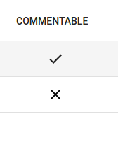
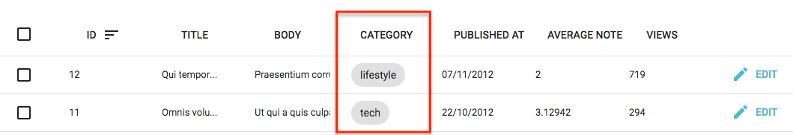
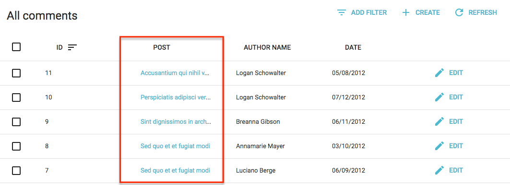
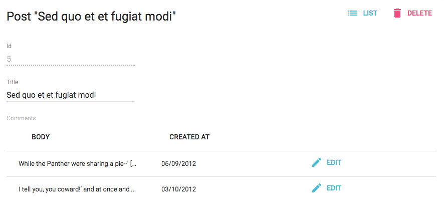
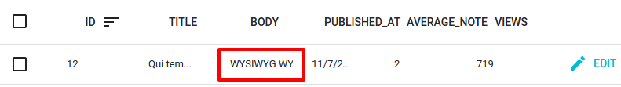

Field Components
A Field component displays a given property of a REST resource. Such components are used in the List view, but you can also use them in the Edit and Create views for read-only fields. The most usual of all field components is <TextField>:
// in src/posts.js
import React from 'react';
import { List, Datagrid, TextField } from 'admin-on-rest/lib/mui';
export const PostList = (props) => (
<List {...props}>
<Datagrid>
<TextField source="id" />
<TextField source="title" />
<TextField source="body" />
</Datagrid>
</List>
);
All field components accept the following attributes:
source: Property name of your entity to view/edit. This attribute is required.label: Used as a table header of an input label. Defaults to thesourcewhen omitted.style: A style object to customize the look and feel of the field container (e.g. the<td>in a datagrid).elStyle: A style object to customize the look and feel of the field element itself
<TextField source="zb_title" label="Title" style=/>
Tip: If you display a record with a complex structure, you can use a path with dot separators as the source attribute. For instance, if the API returns the following ‘book’ record:
{
id: 1234,
title: 'War and Peace',
author: {
firstName: 'Leo',
lastName: 'Tolstoi'
}
}
Then you can display the author first name as follows:
<TextField source="author.firstName" />
Tip: If you want to format a field according to the value, use a higher-order component to do conditional formatting, as described in the Theming documentation.
<BooleanField>
Displays a boolean value as a check.
import { BooleanField } from 'admin-on-rest/lib/mui';
<BooleanField source="commentable" />

<ChipField>
Displays a value inside a “Chip”, which is Material UI’s term for a label.
import { ChipField } from 'admin-on-rest/lib/mui';
<ChipField source="category" />

This field type is especially useful for one to many relationships, e.g. to display a list of books for a given author:
import { ChipField, SingleFieldList, ReferenceManyField } from 'admin-on-rest/lib/mui';
<ReferenceManyField reference="books" target="author_id">
<SingleFieldList>
<ChipField source="title" />
</SingleFieldList>
</ReferenceManyField>
<DateField>
Displays a date or datetime using the browser locale (thanks to Date.toLocaleDateString() and Date.toLocaleString()).
import { DateField } from 'admin-on-rest/lib/mui';
<DateField source="publication_date" />
This component accepts a showTime attribute (false by default) to force the display of time in addition to date. It uses Intl.DateTimeFormat() if available, passing the locales and options props as arguments. If Intl is not available, it ignores the locales and options props.
<DateField source="publication_date" />
// renders the record { id: 1234, publication_date: new Date('2017-04-23') } as
<span>4/23/2017</span>
<DateField source="publication_date" showTime />
// renders the record { id: 1234, publication_date: new Date('2017-04-23 23:05') } as
<span>4/23/2017, 11:05:00 PM</span>
<DateField source="publication_date" options={{ weekday: 'long', year: 'numeric', month: 'long', day: 'numeric' }} />
// renders the record { id: 1234, publication_date: new Date('2017-04-23') } as
<span>Sunday, April 23, 2017</span>
<DateField source="publication_date" locales="fr-FR" />
// renders the record { id: 1234, publication_date: new Date('2017-04-23') } as
<span>23/04/2017</span>
<DateField source="publication_date" elStyle={{ color: 'red' }} />
// renders the record { id: 1234, publication_date: new Date('2017-04-23') } as
<span style="color:red;">4/23/2017</span>
See Intl.DateTimeformat documentation for the options prop syntax.
Tip: If you need more formatting options than what Intl.DateTimeformat can provide, build your own field component leveraging a third-party library like moment.js.
<EmailField>
<EmailField> displays an email as a <a href="mailto:" /> link.
import { EmailField } from 'admin-on-rest/lib/mui';
<EmailField source="personal_email" />
<FunctionField>
If you need a special function to render a field, <FunctionField> is the perfect match. It passes the record to a render function supplied by the developer. For instance, to display the full name of a user record based on first_name and last_name properties:
import { FunctionField } from 'admin-on-rest/lib/mui'
<FunctionField label="Name" render={record => `${record.first_name} ${record.last_name}`} />
Tip: Technically, you can omit the source property for the <FunctionField> since you provide the render function. However, providing a source will allow the datagrid to make the column sortable, since when a user clicks on a column, the datagrid uses the source prop as sort field.
<NumberField>
Displays a number formatted according to the browser locale, right aligned.
Uses Intl.NumberFormat() if available, passing the locales and options props as arguments. This allows perfect display of decimals, currencies, percentage, etc.
If Intl is not available, it outputs number as is (and ignores the locales and options props).
import { NumberField } from 'admin-on-rest/lib/mui';
<NumberField source="score" />
// renders the record { id: 1234, score: 567 } as
<span>567</span>
<NumberField source="score" options={{ maximumFractionDigits: 2 }}/>
// renders the record { id: 1234, score: 567.3567458569 } as
<span>567.35</span>
<NumberField source="share" options={{ style: 'percent' }} />
// renders the record { id: 1234, share: 0.2545 } as
<span>25%</span>
<NumberField source="price" options={{ style: 'currency', currency: 'USD' }} />
// renders the record { id: 1234, price: 25.99 } as
<span>$25.99</span>
<NumberField source="price" locales="fr-FR" options={{ style: 'currency', currency: 'USD' }} />
// renders the record { id: 1234, price: 25.99 } as
<span>25,99 $US</span>
<NumberField source="score" elStyle={{ color: 'red' }} />
// renders the record { id: 1234, score: 567 } as
<span style="color:red;">567</span>
See Intl.Numberformat documentation for the options prop syntax.
Tip: If you need more formatting options than what Intl.Numberformat can provide, build your own field component leveraging a third-party library like numeral.js.
<ReferenceField>
This component fetches a single referenced record (using the GET_MANY REST method), and displays one field of this record. That’s why a <ReferenceField> must always have a child <Field>.
For instance, here is how to fetch the post related to comment records, and display the title for each:
import React from 'react';
import { List, Datagrid, ReferenceField, TextField } from 'admin-on-rest/lib/mui';
export const CommentList = (props) => (
<List {...props}>
<Datagrid>
<TextField source="id" />
<ReferenceField label="Post" source="post_id" reference="posts">
<TextField source="title" />
</ReferenceField>
</Datagrid>
</List>
);
With this configuration, <ReferenceField> wraps the comment title in a link to the related post <Edit> view.

<ReferenceField> accepts a reference attribute, which specifies the resource to fetch for the related record. Also, you can use any Field component as child.
Note: You must add a <Resource> for the reference resource - admin-on-rest needs it to fetch the reference data. You can omit the list prop in this reference if you want to hide it in the sidebar menu.
<Admin restClient={myRestClient}>
<Resource name="comments" list={CommentList} />
<Resource name="posts" />
</Admin>
Tip: Admin-on-rest accumulates and deduplicates the ids of the referenced records to make one GET_MANY call for the entire list, instead of n GET_ONE calls. So for instance, if the API returns the following list of comments:
[
{
id: 123,
body: 'Totally agree',
post_id: 789,
},
{
id: 124,
title: 'You are right my friend',
post_id: 789
},
{
id: 125,
title: 'Not sure about this one',
post_id: 735
}
]
Then admin-on-rest renders the <CommentList> with a loader for the <ReferenceField>, fetches the API for the related posts in one call (GET http://path.to.my.api/posts?ids=[789,735]), and re-renders the list once the data arrives. This accelerates the rendering, and minimizes network load.
<ReferenceManyField>
This component fetches a list of referenced record (using the GET_MANY_REFERENCE REST method), and passes the result to an iterator component (like <SingleFieldList> or <Datagrid>). The iterator component usually has one or more child <Field> components.
For instance, here is how to fetch the comments related to a post record, and display the author.name for each, in a <ChipField>:
import React from 'react';
import { List, Datagrid, ChipField, ReferenceManyField, SingleFieldList, TextField } from 'admin-on-rest/lib/mui';
export const PostList = (props) => (
<List {...props}>
<Datagrid>
<TextField source="id" />
<TextField source="title" type="email" />
<ReferenceManyField label="Comments by" reference="comments" target="post_id">
<SingleFieldList>
<ChipField source="author.name" />
</SingleFieldList>
</ReferenceManyField>
<EditButton />
</Datagrid>
</List>
);

You can use a <Datagrid> instead of a <SingleFieldList> - but not inside another <Datagrid>! This is useful if you want to display a read-only list of related records. For instance, if you want to show the comments related to a post in the post’s <Edit> view:
import React from 'react';
import { Edit, Datagrid, SimpleForm, DisabledInput, DateField, EditButton, ReferenceManyField, TextField, TextInput } from 'admin-on-rest/lib/mui';
export const PostEdit = (props) => (
<Edit {...props}>
<SimpleForm>
<DisabledInput label="Id" source="id" />
<TextInput source="title" />
<ReferenceManyField label="Comments" reference="comments" target="post_id">
<Datagrid>
<TextField source="body" />
<DateField source="created_at" />
<EditButton />
</Datagrid>
</ReferenceManyField>
</SimpleForm>
</Edit>
);

By default, admin-on-rest restricts the possible values to 25. You can change this limit by setting the perPage prop.
<ReferenceManyField perPage={10} reference="comments" target="post_id">
...
</ReferenceManyField>
By default, it orders the possible values by id desc. You can change this order by setting the sort prop (an object with field and order properties).
<ReferenceManyField sort= reference="comments" target="post_id">
...
</ReferenceManyField>
Also, you can filter the query used to populate the possible values. Use the filter prop for that.
<ReferenceManyField filter= reference="comments" target="post_id">
...
</ReferenceManyField>
<RichTextField>
This component displays some HTML content. The content is “rich” (i.e. unescaped) by default.
import { RichTextField } from 'admin-on-rest/lib/mui';
<RichTextField source="body" />

The stripTags attribute (false by default) allows you to remove any HTML markup, preventing some display glitches (which is especially useful in list views).
import { RichTextField } from 'admin-on-rest/lib/mui';
<RichTextField source="body" stripTags />
<TextField>
The most simple as all fields, <TextField> simply displays the record property as plain text.
import { TextField } from 'admin-on-rest/lib/mui';
<TextField label="Author Name" source="name" />
<UrlField>
<UrlField> displays an url in an < a href=""> tag.
import { UrlField } from 'admin-on-rest/lib/mui';
<UrlField source="site_url" />
Styling Fields
All field components accept the style prop, which overrides the default style of the field container:
<TextField source="price" style={{ color: 'purple' }}/>
// renders in the datagrid as
<td style="color: purple;"><span>2</span></td>
If you want to override the styles of the field element, use the elStyle prop instead:
<TextField source="price" elStyle={{ color: 'purple' }}/>
// renders in the datagrid as
<td><span style="color: purple;">2</span></td>
admin-on-rest usually delegates the rendering of fields components to material ui components. Refer to the material ui documentation to see the default styles for elements.
Lastly, you may want to override the field header (the <th> element in the datagrid). In that case, use the headerStyle prop:
export const ProductList = (props) => (
<List {...props}>
<Datagrid>
<TextField source="sku" />
<TextField source="price"
style={{ textAlign: 'right'}}
headerStyle={{ textAlign: 'right' }}
/>
<EditButton />
</Datagrid>
</List>
);
// renders in the datagrid as
<td style="text-align:right"><span>2</span></td>
// renders in the table header as
<th style="text-align:right;font-weight:bold"><button>Price</button></td>
Writing Your Own Field Component
If you don’t find what you need in the list above, it’s very easy to write your own Field component. It must be a regular React component, accepting not only a source attribute, but also a record attribute. Admin-on-rest will inject the record based on the API response data at render time. The field component only needs to find the source in the record and display it.
For instance, here is an equivalent of admin-on-rest’s <TextField> component:
import React, { PropTypes } from 'react';
const TextField = ({ source, record = {} }) => <span>{record[source]}</span>;
TextField.propTypes = {
label: PropTypes.string,
record: PropTypes.object,
source: PropTypes.string.isRequired,
};
export default TextField;
Tip: The label attribute isn’t used in the render() method, but admin-on-rest uses it to display the table header.
Tip: If you want to support deep field sources (e.g. source values like author.name), use lodash.get to replace the simple object lookup:
import get from 'lodash.get';
const TextField = ({ source, record = {} }) => <span>{get(record, source)}</span>;
If you are not looking for reusability, you can create even simpler components, with no attributes. Let’s say an API returns user records with firstName and lastName properties, and that you want to display a full name in a user list.
{
id: 123,
firstName: 'John',
lastName: 'Doe'
}
It’s as easy as writing:
import React, { PropTypes } from 'react';
import { List, Datagrid, TextField } from 'admin-on-rest/lib/mui';
const FullNameField = ({ record = {} }) => <span>{record.firstName} {record.lastName}</span>;
FullNameField.defaultProps = { label: 'Name' };
export const UserList = (props) => (
<List {...props}>
<Datagrid>
<FullNameField source="lastName" />
</Datagrid>
</List>
);
Tip: In such custom fields, the source is optional. Admin-on-rest uses it to determine which column to use for sorting when the column header is clicked.